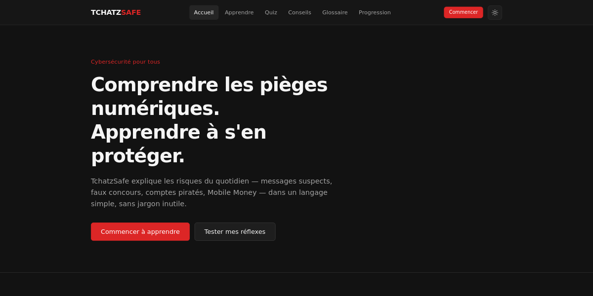
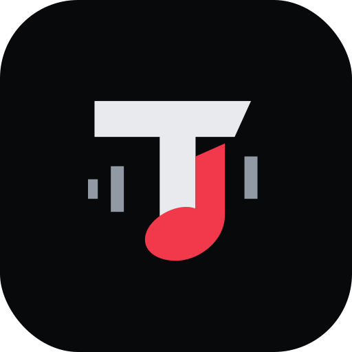

Résoudre des problèmes réels
Des outils pensés pour des personnes, des usages et des contextes concrets.
PORTFOLIO PERSONNEL / ABOMEY-CALAVI, BÉNIN
Moi, c’est Samson Adjaho, développeur web et logiciel en formation. J’imagine, je construis et j’améliore des produits numériques avec curiosité et exigence.

Comprendre le besoin·Construire avec soin·Apprendre en livrant
01 / LE PARCOURS
Je suis étudiant en Systèmes Informatiques et Logiciels à ESM-Bénin et développeur passionné par la création de produits numériques.
J’aime partir d’un besoin concret, explorer les possibilités, puis donner forme à une solution accessible et utile. Mes projets sont aussi un terrain d’apprentissage : j’y expérimente, je corrige et je progresse.
Je m’intéresse au web, au logiciel et au développement Android natif. La cybersécurité fait également partie des domaines que je souhaite approfondir.
Voir mes certificationsDes outils pensés pour des personnes, des usages et des contextes concrets.
Transformer les idées en projets tangibles, puis les faire évoluer.
La clarté, l’accessibilité et le détail comptent autant que la technique.
02 / BOÎTE À OUTILS
03 / SÉLECTION DE PROJETS
Des produits pédagogiques et des outils pratiques, développés autour de besoins identifiés.

CAPTURE DU PROJETRendre la cybersécurité compréhensible et concrète, même sans bagage technique.
Le besoin Des réflexes numériques simples et fiables sont difficiles à adopter lorsque les risques sont expliqués dans un langage trop technique.
Un espace simple pour retrouver les documents pédagogiques de sa classe, sans se perdre dans les groupes de discussion.
Le besoin Les supports de cours se dispersent. Klassio rassemble les ressources par classe et par matière, dans un format adapté aux usages universitaires locaux.
Un jeu de frappe minimaliste pour s’entraîner à taper plus vite et avec davantage de précision.
Le besoin Mesurer sa progression et pratiquer régulièrement grâce à une interface légère, conçue pour rester disponible même hors connexion.
AUTRES EXPLORATIONS
Des projets plus anciens qui ont nourri ma pratique et ma manière de construire.
04 / AU-DELÀ DU NAVIGATEUR
Un lecteur musical Android natif, pensé pour écouter sa propre bibliothèque — simplement et en privé.
L’application détecte les fichiers audio présents sur le téléphone et les lit localement. Pas de compte, pas de serveur requis pour écouter, pas de publicité ni de télémétrie.
MediaStore / SAF facultatif→ Bibliothèque locale→ MediaSession + ExoPlayer
Room conserve favoris, playlists et historique ; DataStore les préférences. Aucun audio n’est copié en base.
L’APK v1.0.0 est un build debug publié sur GitHub, pas une version Play Store. Android peut demander d’autoriser l’installation depuis cette source. Aucune capture réelle de l’interface n’est incluse ; le téléphone illustré est conceptuel.

Tchatz Music Votre musique.05 / INITIATIVE COLLECTIVE
UN COLLECTIF TECHNOLOGIQUE
AGORA est un collectif technologique que j’ai fondé pour mettre les compétences numériques au service des jeunes, des étudiants et des petites entreprises, particulièrement dans le contexte africain.
Notre ambition : réunir des talents complémentaires pour imaginer des solutions utiles, rendre les organisations plus visibles et ouvrir de nouvelles possibilités grâce au numérique.
Pour qui ?
Jeunes, étudiants, associations
et petites entreprises en quête d’un partenaire numérique.
06 / LE PROCHAIN ÉCHANGE
Une collaboration, une question ou simplement l’envie de parler produit et technologie ? Ma boîte mail est ouverte.